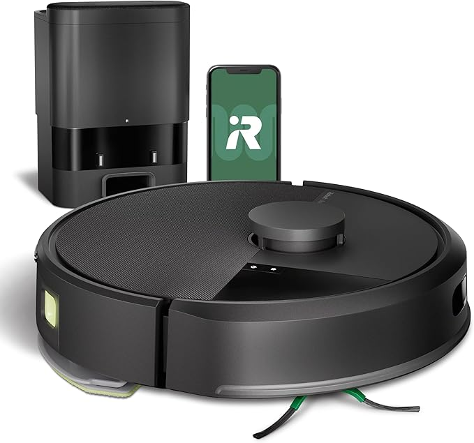

El mercado de los robots aspiradores ha explotado con innovaciones asombrosas. Analizamos los modelos más potentes y avanzados de 2025 para que elijas con seguridad. Comparamos desde la potencia de succión hasta la inteligencia de sus bases de autolimpieza.
La tecnología de limpieza del hogar ha dado un salto cuántico. Los modelos de 2025 no solo aspiran, sino que frotan, se lavan solos, esquivan obstáculos con precisión milimétrica y hasta extienden sus cepillos para llegar donde antes era imposible. Tras analizar las últimas novedades, hemos seleccionado cuatro campeones, cada uno líder en su categoría.
Tabla Comparativa Rápida
| Modelo | Potencia Succión | Sistema Fregado | Navegación | Base de Carga | Ideal para... | Ver en Amazon |
|---|---|---|---|---|---|---|
| ECOVACS DEEBOT X9 PRO | 16,600 Pa | Rodillo OZMO + Elevación | IA + LiDAR | Todo en uno (agua caliente) | Potencia y limpieza de bordes | Comprar |
| DREAME X40 Ultra | 12,000 Pa | Mopas extensibles y elevables | IA + LiDAR | Todo en uno + cepillo lateral extensible | Innovación y fregado superior | Comprar |
| Xiaomi Robot Vacuum X20+ | 6,000 Pa | Mopas giratorias dobles | LDS (Láser) | Todo en uno | Máximo equilibrio calidad-precio | Comprar |
| iRobot Roomba 105 Vac+ | Succión superior (70x) | Solo aspiración | LiDAR | Autovaciado (75 días) | Fiabilidad y mapeo preciso | Comprar |
Análisis Detallado de Modelos
1. ECOVACS DEEBOT X9 PRO Omni
El DEEBOT X9 PRO es, simplemente, una bestia. Con una potencia de succión de 16,600 Pa, no hay suciedad que se le resista. Su principal innovación es el rodillo de fregado OZMO que se eleva automáticamente al detectar alfombras, y su capacidad para limpiar con agua caliente desde la base, desinfectando y eliminando manchas difíciles con mayor eficacia.
Pros y Contras
- Pros: Succión brutal, fregado con agua caliente, excelente limpieza de bordes, navegación muy precisa.
- Contras: Es uno de los modelos más caros del mercado.
Veredicto
Si buscas lo mejor de lo mejor y el presupuesto no es un problema, el X9 PRO es el robot definitivo. Es una inversión en limpieza profunda y automatización total.
Ver en Amazon2. DREAME X40 Ultra
Dreame sigue innovando y el X40 Ultra es la prueba. Su característica estrella es la tecnología MopExtend, que extiende físicamente una de las mopas para fregar justo en los bordes y esquinas, un punto débil histórico de estos aparatos. Además, el cepillo lateral también se eleva y extiende, asegurando una cobertura total. Su base es una de las más completas del mercado.
Pros y Contras
- Pros: Limpieza de bordes sin rival, sistema de fregado muy inteligente, base de carga ultra-completa, gran potencia.
- Contras: Su tecnología avanzada lo sitúa en la gama alta de precios.
Veredicto
El robot perfecto para perfeccionistas. Si odias ver esa pequeña línea de polvo en los zócalos, la tecnología del Dreame X40 Ultra está diseñada para ti. Es la vanguardia de la innovación en limpieza.
Ver en Amazon3. Xiaomi Robot Vacuum X20+
Aquí es donde Xiaomi brilla. El X20+ trae características de la gama más alta a un precio mucho más accesible. Ofrece una base todo en uno que vacía el polvo, y limpia y seca las mopas. Su sistema de fregado con doble mopa giratoria es muy eficaz para la limpieza diaria, y su navegación láser LDS es rápida y precisa. Con 6,000 Pa, tiene potencia más que de sobra para la mayoría de hogares.
Pros y Contras
- Pros: Increíble relación características/precio, base totalmente automática, buen rendimiento de fregado.
- Contras: No tiene la potencia de succión ni las últimas innovaciones en bordes de los modelos premium.
Veredicto
Es la compra inteligente de 2025. Obtienes el 90% de la funcionalidad de los robots de más de 1000€ por una fracción del coste. Ideal para quien quiere una automatización casi total sin arruinarse.
Ver en Amazon4. iRobot Roomba 105 Vac+
iRobot por fin se sube al carro de la navegación LiDAR y lo hace con un producto muy sólido. El Roomba 105 Vac+ destaca por la fiabilidad del software de iRobot y su potencia de succión, muy efectiva especialmente en alfombras y con pelo de mascota. Este modelo se centra en ser un aspirador excepcional. Su base de autovaciado permite olvidarse de él durante meses.
Pros y Contras
- Pros: Navegación LiDAR muy precisa, software muy pulido y fácil de usar, gran potencia de aspiración, fiabilidad de la marca.
- Contras: Este modelo no friega, es solo aspirador.
Veredicto
Si tu prioridad es una aspiración potente y fiable, y no necesitas la función de fregado, el Roomba 105 Vac+ es una de las mejores opciones. Es un caballo de batalla moderno y eficiente.
Ver en AmazonConclusión Final: ¿Cuál Comprar?
La elección depende de tu presupuesto y tus prioridades:
- Para el máximo poder y tecnología: El ECOVACS DEEBOT X9 PRO es el rey indiscutible de la potencia.
- Para los más perfeccionistas con los bordes: El DREAME X40 Ultra y su tecnología de mopa extensible es la mejor opción.
- Para la mejor relación calidad-precio: El Xiaomi Robot Vacuum X20+ ofrece una automatización casi total por un precio imbatible.
- Para una aspiración pura, potente y fiable: El iRobot Roomba 105 Vac+ es la apuesta segura, ahora con la mejor navegación.
Esperamos que esta guía te haya sido de gran ayuda para navegar el emocionante mundo de los robots de limpieza. ¡Feliz compra!